Trialset
自信があるから、是非食べてもらいたい1回限り！少量お試しセット
- 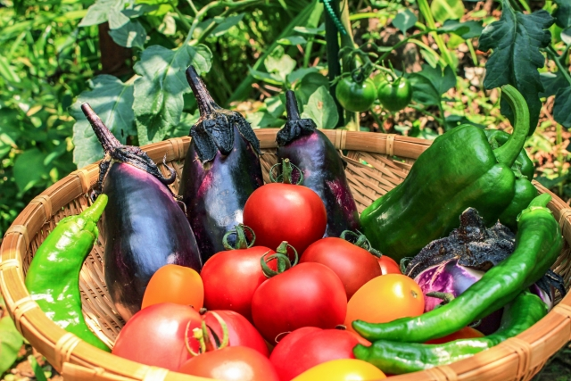
【ベジックス】
旬＊お試し野菜セット（6品目）
￥1,280（税込 / 送料別）
生産者：千葉県松戸市 ベジックス - 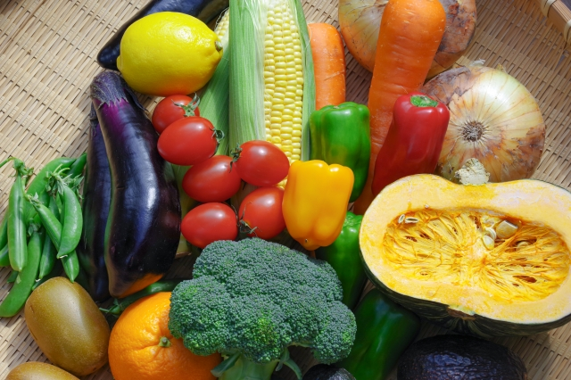
【くちぶえ農園】
旬＊お試し野菜セット（6品目）
￥1,280（税込 / 送料別）
生産者：長野県 飯田市 くちぶえ農園
お試しセットを注文
reason to be chosen
スグ食べが選ばれる3つの理由選ばれるのには理由があります！
point 01
本当の意味での産地直送

「なるべく収穫したばかりの状態で、野菜を味わって欲しい。」
スグ食べでは、既存の産地直送サービスのように箱詰め用の倉庫を介すことはありません。農家が収穫したその日に、お客様の元へ直送で野菜をお送りします。
point 02
安心安全な無農薬野菜

出品している生産者は、有機栽培もしくは自然栽培の農家のみ。全ての商品が無農薬・無化学肥料など、安全にこだわって生産された「オーガニック農作物」です。そのため、どの商品も安心してお買い求めいただけます。
point 03
たくさんの旬な野菜との出会い

年間数十種の野菜を作る生産者から、今が旬の多様な野菜が届きます。すぐ食べでは生産者ごとに商品が異なります。中には年間100種類もの多品種生産をしている生産者も。旬な野菜はもちろん、珍しい野菜とも出会えます。
.png)
commitment
実はまだまだこんなに少ない!日本のオーガニック農家
オーガニック農家は、国内全体の約0.5％
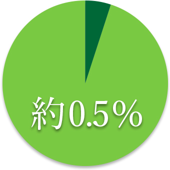オーガニック農家は、
国内全体の約0.5％
最近はレストランなどでもよく目にするのでもっとたくさんあるかと思いきや、実はオーガニック農家は国内農家の0.5％しか存在していません。
でもその0.5％のオーガニック農家は、健やかな野菜を安心して食べてもらいたいという強い気持ちで大切に野菜を作っています。
スグ食べでは、そんな農家さんを厳選し、出品していただいています。
農家さんによって栽培方法も違います。
自分や家族の体を作る礎となる野菜の栽培方法、この際把握してみては？
だから安心して購入できるスグ食べの品質保証
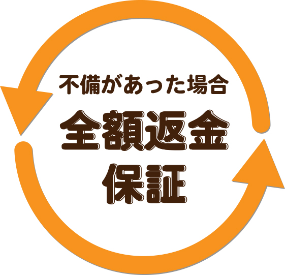商品に不備があった際には、
スグ食べが
“全額” 返金対応します!
スグ食べに出品している農家さんたちは、「大切に育てた自慢の農作物を、できるだけ美味しい状態で食べてもらいたい。」そんな想いを持った農家さんばかりです。
そのため、収穫から梱包・出荷にいたるまでしっかりと品質管理されています。
とはいえ、実物を見ずに野菜や果物を購入するのはちょっと不安…
そんな方にも安心してご購入いただけるよう、スグ食べでは品質保証をお約束しています。
万が一届いた商品に不備があった際には、スグ食べにて全額返金対応いたします。
きちんと知っておきたい、栽培方法による違い
- 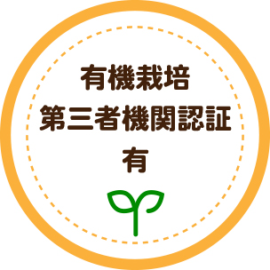 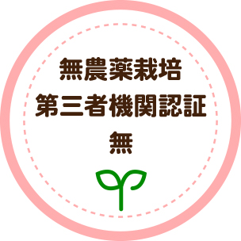
有機の農薬・肥料・堆肥だけを
使用しています - 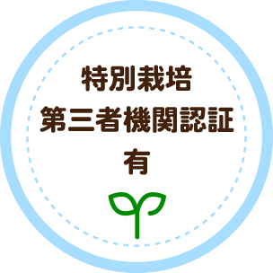 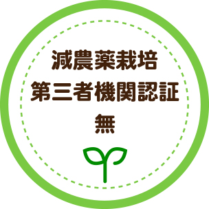
化学農薬・肥料・堆肥も使用しますが、
基準量の50％以下だけ - 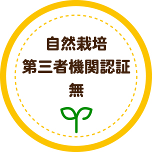
農薬・肥料・堆肥など
お試しセットを注文
customer voice
食べてわかった、この違いおかげさまで感謝のお声をいただいています
line up
今月のお届け野菜ラインナップ（一例）
- 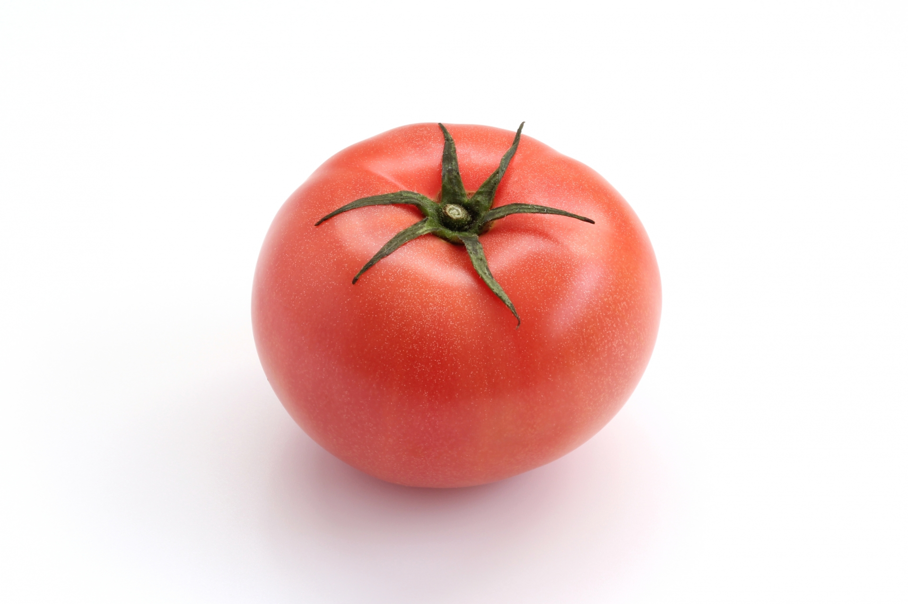
トマト
- 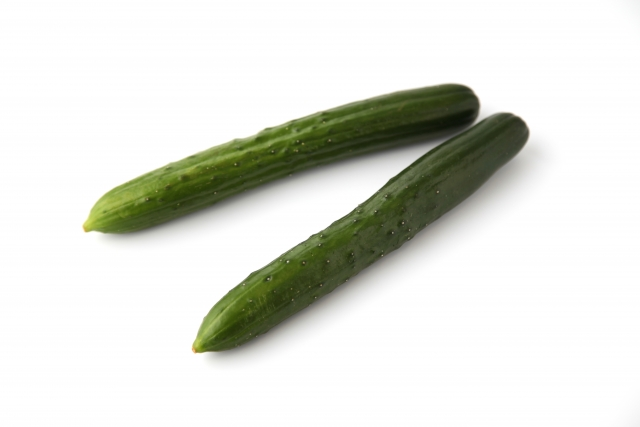
キュウリ
-
ピーマン
- 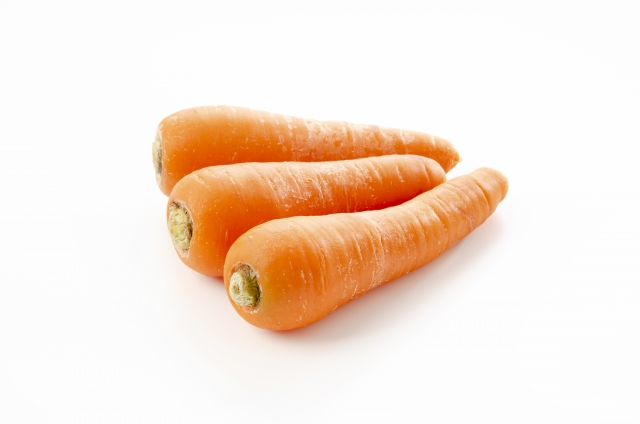
人参
- 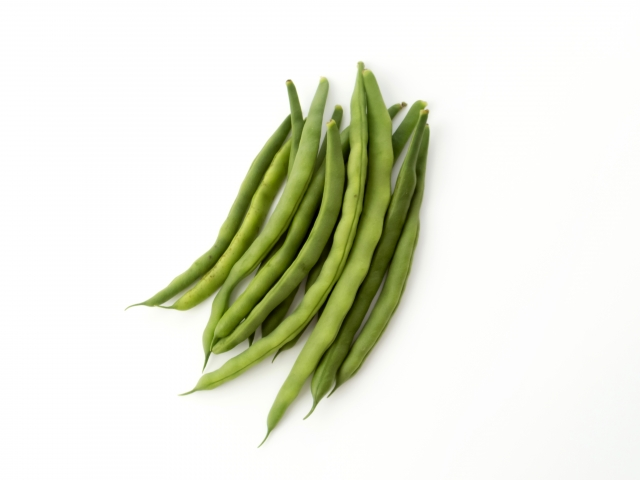
さやえんどう
- 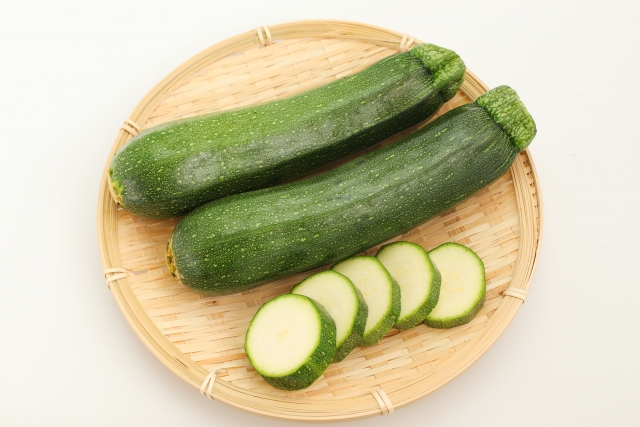
ズッキーニ
faq
よくある質問
産地直送のサービスってよく見るけど何が違うの？
鮮度が抜群に違います。 通常の産直サービスは、一度倉庫などに野菜を集め、そこで箱詰め作業をして配送しています。
この仕組みでは、お客様が商品を受け取る時には収穫してから3,4日が経過しています。スグ食べでは、箱詰め作業を農家さんにお願いすることにより、最短で収穫当日に商品を受け取ることができます。
どんな農家さんが登録してるの？
無農薬にこだわる、オーガニック農家さんのみが登録しています。 有機栽培や自然栽培などの環境に配慮した農法で生産するには、通常以上に費用も手間もかかります。そんな中でも、「安心な野菜を食べて欲しい」という強い思いを持って、こだわって野菜を作っている農家さんがいます。 そういった、厳選されたオーガニック農家さんのみが登録しているため、安心してお買い物を楽しんでいただけます。
Trialset
自信があるから、是非食べてもらいたい1回限り！少量お試しセット
-
【ベジックス】
旬＊お試し野菜セット（6品目）
￥1,280（税込 / 送料別）
生産者：千葉県松戸市 ベジックス -
【くちぶえ農園】
旬＊お試し野菜セット（6品目）
￥1,280（税込 / 送料別）
生産者：長野県 飯田市 くちぶえ農園
お試しセットを注文